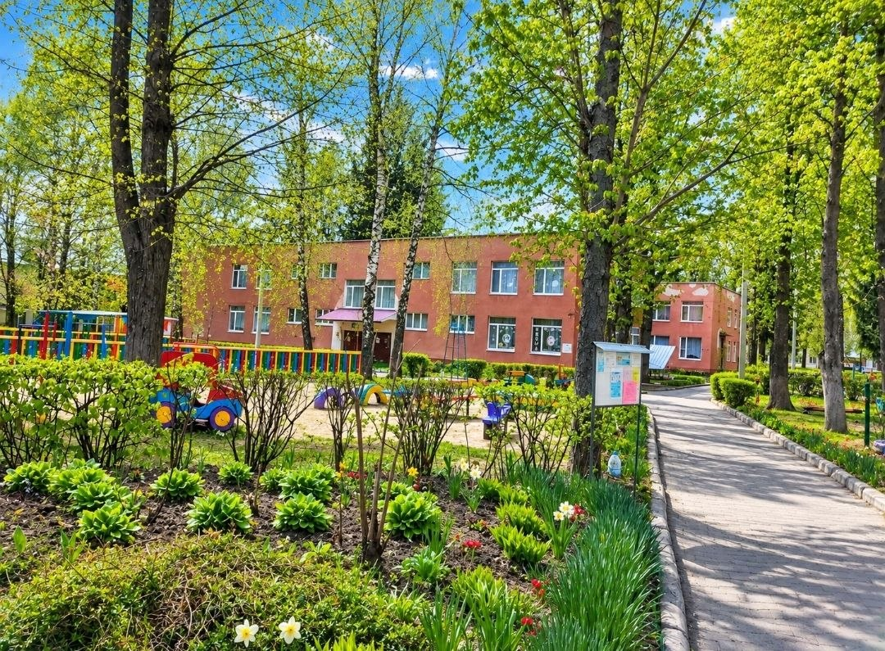

Місце, де кожна дитина відчуває себе захищеною, потрібною і щасливою, а батьки — спокійними.

ЗДО №45 «Калинка» — сучасний заклад дошкільної освіти, де створено безпечне середовище, турботливу атмосферу та всі умови для гармонійного розвитку кожної дитини.
Ми підтримуємо ініціативність, творчість та індивідуальність малюків — і робимо так, щоб у садочок хотілося приходити щоранку.
11 затишних груп, у кожній — тепла атмосфера, свій характер і турботливі вихователі.
Ідеї, якими ми пишаємось — від чистого повітря до турботи про довкілля та ментальне здоров'я.
Я хочу, щоб у нашому садочку завжди було літо.